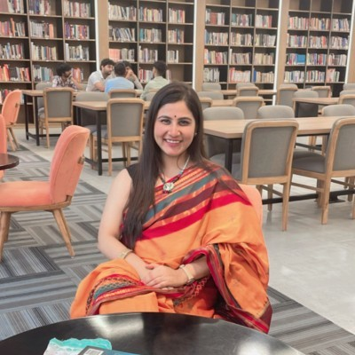
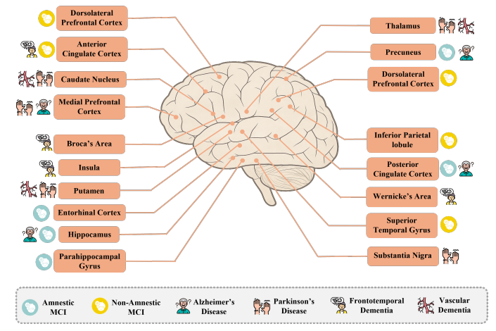
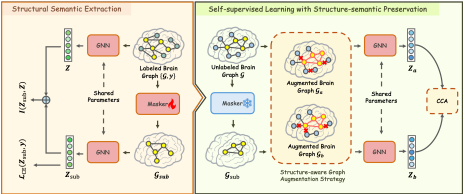
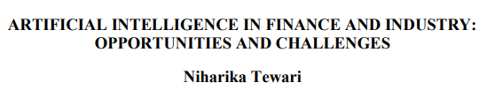
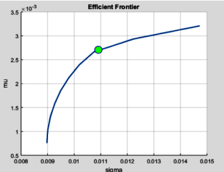

Cotutelle PhD Candidate · RMIT University & Bits Pilani
I'm a Cotutelle Ph.D. researcher in the School of Computing at RMIT University and in the Department of Biological Sciences and Department of Computer Science and Information Systems at BITS Pilani, K.K. Birla Goa Campus, under the supervision of Prof. Feng Xia, Dr. Ziqi Xu and Prof. Veeky Baths specialized in brain graphs and biomedical imaging.
Before this, I worked as an Assistant Professor and completed my Master's degree at South Asian University. I'm broadly interested in graph machine learning, explainable artificial intelligence, multimodal learning, and computational neuroimaging, with a focus on developing machine learning methods that are both theoretically grounded and practically useful for biomedical and healthcare applications.

Explainable Graph Neural Networks: Understanding Brain Connectivity and Biomarkers in Dementia
arXiV, 2025
Authored the first comprehensive review of Explainable Graph Neural Networks (XGNNs) in dementia research, providing a taxonomy of explainability methods, benchmarking existing approaches, and identifying future research directions for clinically trustworthy AI.

Structure Matters: Brain Graph Augmentation via Learnable Edge Masking for Data-efficient Psychiatric Diagnosis
Australasian Joint Conference on Artificial Intelligence, 2025
Introduced SAM-BG, a structure-aware self-supervised framework for brain graph representation learning that preserves structural semantics during augmentation. The model improves diagnostic accuracy in low-data scenarios while uncovering clinically meaningful connectivity biomarkers.

Artificial intelligence in finance and industry: Opportunities and challenges
Decision Strategies and Artificial Intelligence Navigating the Business Landscape, 2023
Studied the adoption of artificial intelligence in financial services, with a focus on intelligent automation, fraud detection, and AI-driven banking solutions.

A Review of Omega Based Portfolio Optimization
2019 International Conference on Power Electronics, Control and Automation (ICPECA), IEEE
Investigated portfolio optimization by incorporating Conditional Value-at-Risk (CVaR) constraints into the asset allocation process. Evaluated the impact of fixed CVaR thresholds on portfolio performance using historical market data from Yahoo Finance.